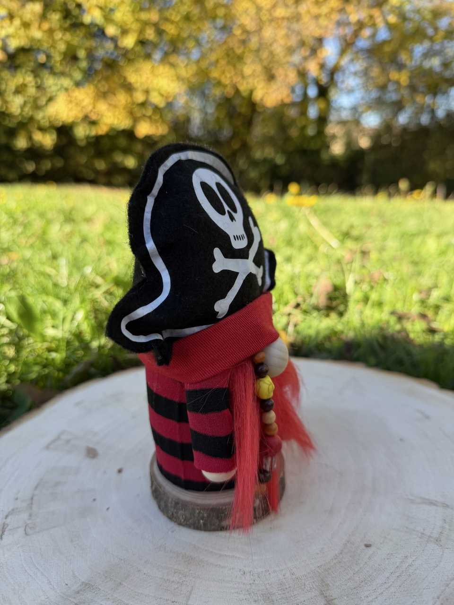
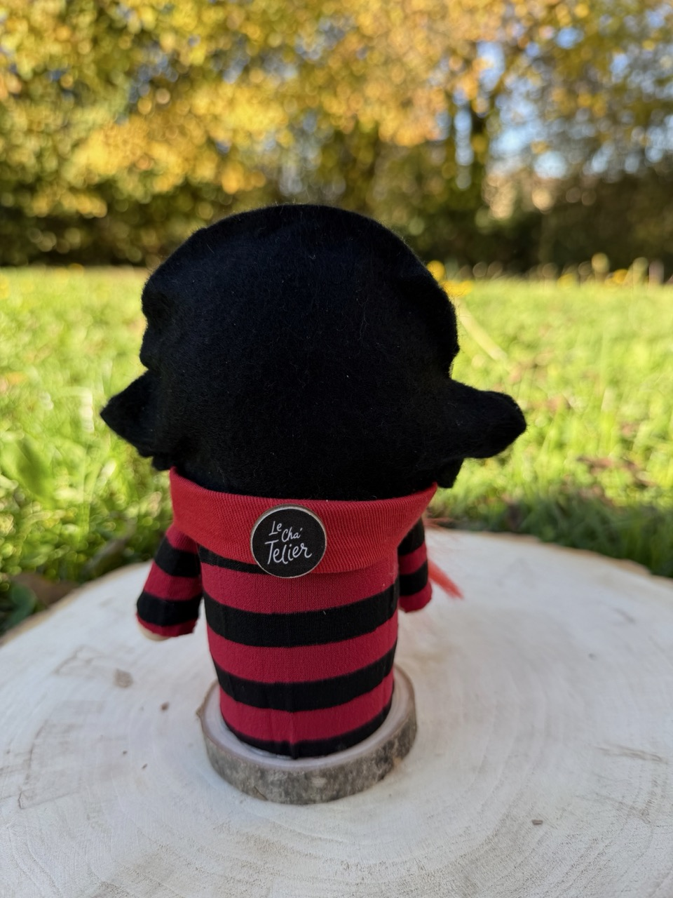
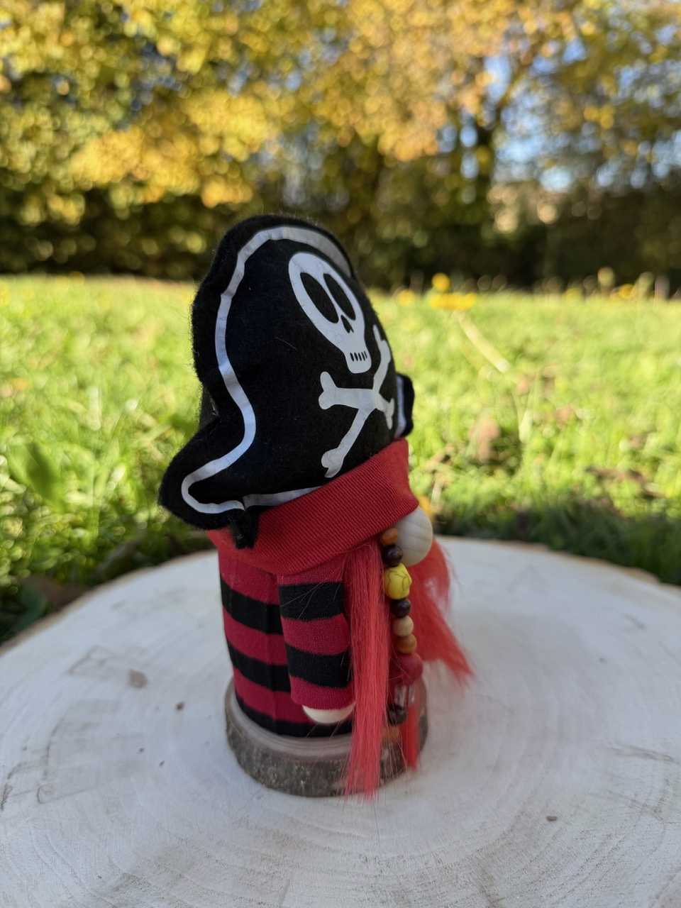
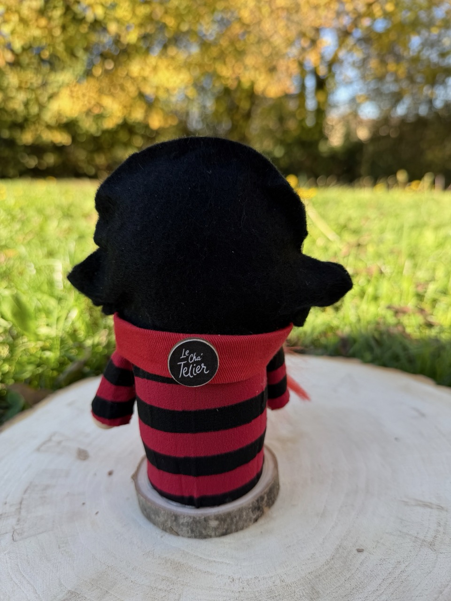

Plongez dans l’univers unique de Jolly, un gnome pirate entièrement fait main, idéal pour apporter une touche originale et ludique à votre décoration ou comme cadeau original.
 



✨ Voici Jolly — le Gnome Pirate, aventurier des sept mers ! ✨
Avec son petit chapeau de pirate, son cache-œil espiègle et son air malicieux, Jolly incarne l’esprit de l’aventure, du trésor et des océans lointains. Toujours prêt à embarquer pour de nouvelles péripéties, il apporte fantaisie, humour et audace à votre décoration originale.
Sur une étagère, un bureau ou en cadeau, ce gnome pirate fait main fera sourire tous ceux qui aiment le monde mystérieux et exaltant des pirates.
⚓ Un must-have pour les amoureux de la mer, des aventures et des créations artisanales uniques !
🏴☠️ Chaque gnome fait main est créé avec amour et esprit d’aventure. Découvrez d’autres créations originales et artisanales made in France dans ma boutique Etsy !
📦 Livraison par Mondial Relay : lors de votre commande, je vous contacterai pour compléter le bon de livraison et choisir ensemble le point relais le plus proche de chez vous. 🌊✨
25,00 €
Commander sur EtsyChoisissez un thème, un univers ou un personnage et je créerai votre gnome personnalisé fait main, unique et original.
Créer mon gnome personnalisé